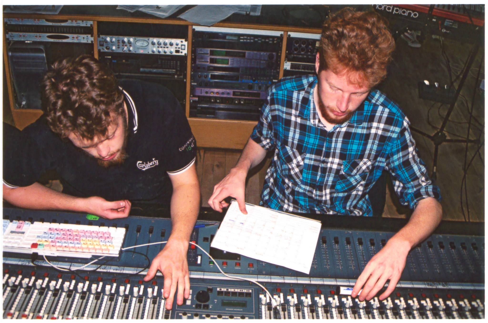
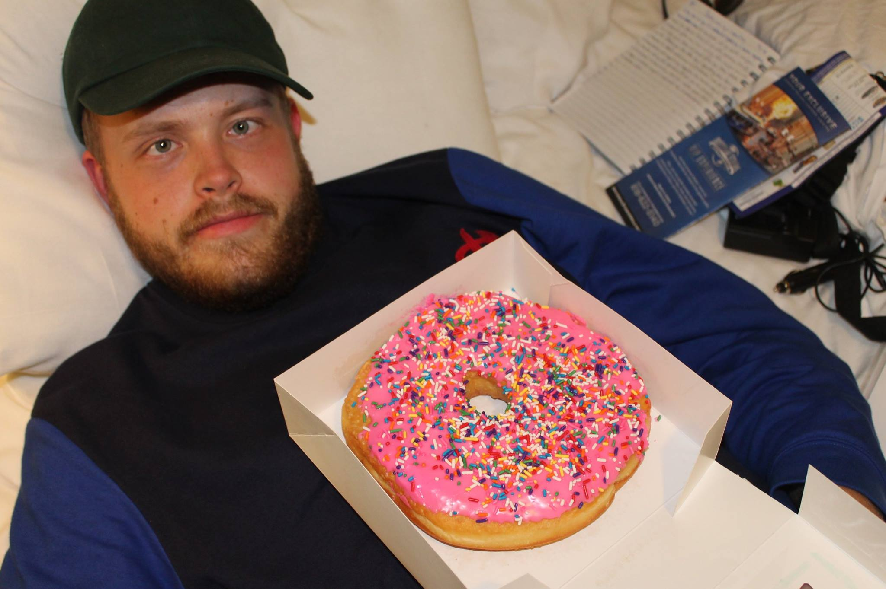
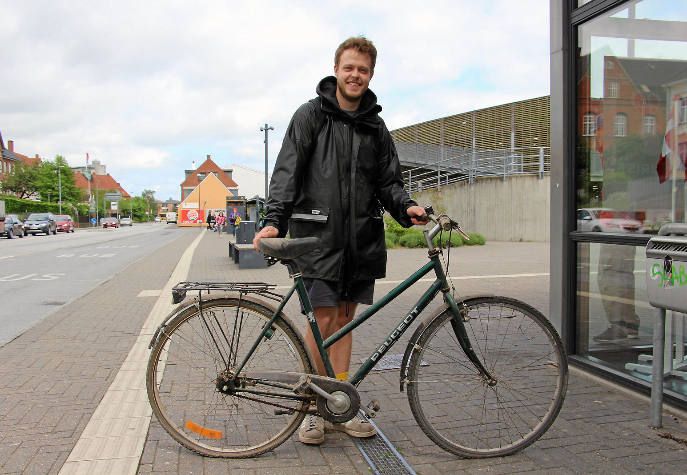

Trommer er det jeg altid har dyrket. Det er min vej ind i musikken. Det er den interesse og evne som jeg ikke ville bytte for noget andet. For mig er det fysisk energi oversat til musik.

Jeg opdagede Apocalyptica i 2010 - altså rockmusik på cello. Det faldt lige i min smag. Rockmusik var dog ikke hvad der ligefrem blev dyrket på musikskolen. Istedet fik jeg en kærlighed for at spille klassisk musik.

Efter gymnasiet ville jeg på højskole. Den Rytmiske Højskole. Jeg spillede stadig trommer, men takket være min ven Mikkel, var lydteknik det nye for mig.

Tænk bare hvilket eventyr det ville være at sejle hvorhen i verden man ville. Jeg er begyndt i Næstved Sejlklub, med håbet om at købe en båd.

Jeg voksede fysisk og mentalt fra celloen. Så var det naturligt at gå et skridt opad i størrelse, nedad i lyd og ind i jazz. Derfor begyndte jeg at spille kontrabas.

På min lange rejse tværs over USA, fik jeg en ganske særlig yndlingsdessert. Det er måske usundt, men jeg kommer helt sikkert til at lave mange donuts i fremtiden.

Konklusionen på disse forskellige interesser, er at jeg er et nysgerrigt menneske, der aldrig stopper med at blive inspireret. Min store drøm er at udleve mine ideer i virkeligheden. Billedet er fra mit første projekt, i den retning.